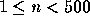

| Pendulum |
Consider a pendulum hanging on a string from a hook on a wall. When pushed, this pendulum will swing back and forth. Now imagine other hooks on the wall, placed in the path of our pendulum's string. The pendulum will bend around them, possibly even loop around them. In general, it will follow a much more complex path than before. After some time, the pendulum's motion will repeat, the pendulum will follow a periodic orbit. What we would like you to do is to compute the distance travelled by the pendulum as it completes one cycle of the orbit.
More formally, we place a cartesian coordinate system on the wall. The pendulum's string is affixed at the origin (0,0). As usual, the x-axis points to the right and the y-axis points upwards. The string of the pendulum has a length of r. The pendulum is released at position (-r,0) and therefore starts swinging to the right. Furthermore, there are n additional hooks distributed over the plane which may influence the path of the pendulum.
In our ideal world, the following assumptions are true:
Your program should simulate the movement of the pendulum and output the spatial length of the periodic orbit that it finally enters. As you may remember from physics: due to gravity, the pendulum will never reach a height greater than the one it started from! That is, it will never get above the x-axis. It will either reach its initial height again or circle endlessly around a hook in the wall.
The input file contains several test cases. Each case begins with a line containing an integer n (the number of hooks,  ) and a real r (the length of the pendulum's string). The following n lines each contain two integers specifying the x- and y-coordinate of the corresponding hook.
The file ends with a case having r = 0, which should not be processed.
For each case output a line containing the number of the case (`Pendulum #1', `Pendulum #2', etc.).
Then print a line that contains the distance which the pendulum travels for completing one cycle of its periodic orbit. Do not count the distance travelled to reach the starting point of the orbit. (Adhere to the format shown in the output sample.) The distance should be exact to two digits to the right of the decimal point.
Output a blank line after each test case.
2 16.0 3 -4 -3 -4 1 18.0 5 -12 0 0
Pendulum #1 Length of periodic orbit = 87.66 Pendulum #2 Length of periodic orbit = 31.42